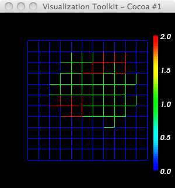

#!/usr/bin/env python
import vtk
# blue -> red LUT
lutBlueRed = vtk.vtkLookupTable()
lutBlueRed.SetHueRange(0.667,0.0)
lutBlueRed.Build()
ren1 = vtk.vtkRenderer()
renWin = vtk.vtkRenderWindow()
renWin.AddRenderer(ren1)
iren = vtk.vtkRenderWindowInteractor()
iren.SetRenderWindow(renWin)
reader = vtk.vtkDataSetReader()
reader.SetFileName('Step_0000-12x12.vtk')
aax = vtk.vtkAssignAttribute()
aax.SetInputConnection(reader.GetOutputPort())
fieldname="CellId"
fieldname="ClusterId"
fieldname="CellType"
aax.Assign(fieldname,"SCALARS","POINT_DATA")
aax.Update()
srange = aax.GetOutput().GetScalarRange()
print fieldname,' range: ',srange
mapper = vtk.vtkDataSetMapper()
mapper.SetInputConnection(aax.GetOutputPort())
mapper.ScalarVisibilityOn()
mapper.SetScalarRange(srange)
mapper.SetLookupTable(lutBlueRed)
actor = vtk.vtkActor()
actor.SetMapper(mapper)
actor.GetProperty().SetInterpolationToFlat()
#actor.GetProperty().SetInterpolationToGouraud()
#actor.GetProperty().SetInterpolationToPhong()
# no!
#actor.GetProperty().SetInterpolationToNearest()
#actor.GetProperty().SetInterpolationToLinear()
#------------------------
scalarBar = vtk.vtkScalarBarActor()
scalarBar.SetLookupTable(lutBlueRed)
#scalarBar.SetTitle("Stress")
scalarBar.GetPositionCoordinate().SetCoordinateSystemToNormalizedViewport()
#scalarBar.GetPositionCoordinate().SetValue(0.8,0.05)
scalarBar.SetOrientationToVertical()
scalarBar.SetWidth(0.1)
scalarBar.SetHeight(0.9)
scalarBar.SetPosition(0.88,0.1)
#scalarBar.SetLabelFormat("%-#6.3f")
scalarBar.SetLabelFormat("%-#3.1f")
scalarBar.GetLabelTextProperty().SetColor(1,1,1)
#scalarBar.GetTitleTextProperty().SetColor(1,0,0)
ren1.AddActor2D(scalarBar)
ren1.AddActor(actor)
renWin.SetSize(300,300)
renWin.Render()
iren.Start()
~/dev/Glazier/12x12$ cat Step_0000-12x12.vtk # vtk DataFile Version 3.0 vtk output ASCII DATASET STRUCTURED_POINTS DIMENSIONS 12 12 1 SPACING 1 1 1 ORIGIN 0 0 0 POINT_DATA 144 FIELD FieldData 3 CellType 1 144 char 0 0 0 0 0 0 0 0 0 0 0 0 0 0 0 0 0 0 0 0 0 0 0 0 0 0 0 0 0 0 0 0 0 0 0 0 0 0 0 0 0 0 0 0 1 0 0 0 0 0 0 0 2 2 1 1 1 1 0 0 0 0 0 2 2 2 1 1 1 1 1 0 0 0 0 1 1 1 1 1 1 1 0 0 0 0 0 1 1 1 1 1 1 1 1 0 0 0 0 0 1 1 2 2 1 2 0 0 0 0 0 0 1 1 1 2 2 2 0 0 0 0 0 0 0 0 0 0 0 0 0 0 0 0 0 0 0 0 0 0 0 0 0 0 CellId 1 144 long 0 0 0 0 0 0 0 0 0 0 0 0 0 0 0 0 0 0 0 0 0 0 0 0 0 0 0 0 0 0 0 0 0 0 0 0 0 0 0 0 0 0 0 0 3 0 0 0 0 0 0 0 1 1 2 2 3 3 0 0 0 0 0 1 1 1 2 2 3 3 3 0 4 4 4 5 5 6 0 0 0 6 0 0 0 0 0 7 4 5 5 6 6 6 6 0 0 0 0 0 7 7 8 8 6 9 0 0 0 0 0 0 7 7 7 8 9 9 0 0 0 0 0 0 0 0 0 0 0 0 0 0 0 0 0 0 0 0 0 0 0 0 0 0 ClusterId 1 144 long 0 0 0 0 0 0 0 0 0 0 0 0 0 0 0 0 0 0 0 0 0 0 0 0 0 0 0 0 0 0 0 0 0 0 0 0 0 0 0 0 0 0 0 0 3 0 0 0 0 0 0 0 1 1 2 2 3 3 0 0 0 0 0 1 1 1 2 2 3 3 3 0 0 0 0 4 4 4 5 5 6 6 0 0 0 0 0 7 4 5 5 6 6 6 6 0 0 0 0 0 7 7 8 8 6 9 0 0 0 0 0 0 7 7 7 8 9 9 0 0 0 0 0 0 0 0 0 0 0 0 0 0 0 0 0 0 0 0 0 0 0 0 0 0

Mapping cell types with interpolation=flat (solid & wireframe).
Mapping cell Ids (left) and using vtkDiscreteMarchingCubes (right; after artificially making dataset 3-D by duplicating layer in Z) -- NOT what we want.
What we currently display in CC3D. (NOTE that CC3D displays a 13x13 grid, as opposed to 12x12 - argh)